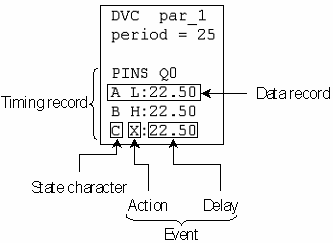

Structure of an ASCII Device Cycle
The general format of an ASCII device cycle is as follows:
DVC <ASCII_device_cycle>
period = <ASCII_device_cycle_period>
PINS <pins_or_pin_groups_1>
<state character> [<action>:<delay> <action>:<delay> ...]
<state character> [<action>:<delay> <action>:<delay> ...]
...
[PINS <pins_or_pin_groups_2>
<state character> [<action>:<delay> <action>:<delay> ...]
<state character> [<action>:<delay> <action>:<delay> ...]
...
[PINS <pins_or_pin_groups_n>
<state character> [<action>:<delay> <action>:<delay> ...]
<state character> [<action>:<delay> <action>:<delay> ...]
...]
The function of the individual statements is as follows:
- DVC <ASCII_device_cycle>
(mandatory):
This statement marks the start of an ASCII device cycle and defines its name.
- period =
<ASCII_device_cycle_period> (mandatory):
This statement specifies the ASCII period length in ns. The test system cycle length which is specified in the timing set generated for this ASCII device cycle is calculated on the basis of this value. How exactly this is done depends on thectim and the xfact columns of the global configuration file (see The Input Columns andThe Output Columns).
- PINS <pins_or_pin_groups_1> (mandatory):
This statement specifies the pins for which the following state characters are to be defined. You can specify more than one name and can also mix pins and pin groups. But you cannot specify the pin groups defined by DFGP X. The PINS statement together with its associated state character definitions is called a timing record.
- <state character>
[<action>:<delay> ...]
(mandatory):
This statement, which is called a data record, defines the meaning of <state character> by associating it with a possible empty sequence of events. An event consists of an action and a delay, separated by a colon.
The values for <state character> can be any ASCII characters except white spaces, ‘;', ‘#', and the characters ‘D' and ‘R'. ‘D' and ‘R' are used as keywords for an abbreviated representation of the state characters for pin groups in the ASCII vector files (see The ASCII Vector Row). Note also that certain functions of the vector translation assume that certain standard state characters are defined; this applies to the abbreviated state character representation just mentioned, and also to the default vector padding (see X-Modes, Processing of the Repeat Factor, and ASCII Vector Padding).
The possible values for <action> are the action codes as used in the wavetable, including the codes ‘C' and ‘D' for selective digital capture. Note that you cannot use 'D' as a state character.
The format for the <delay> specification is the same as in the timing sets.
The following figure illustrates the terminology used to describe the components of an ASCII device cycle:
